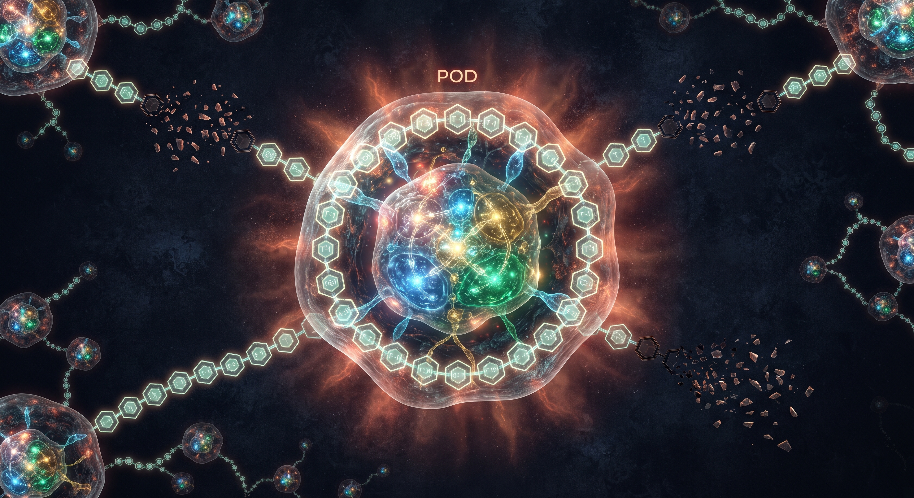
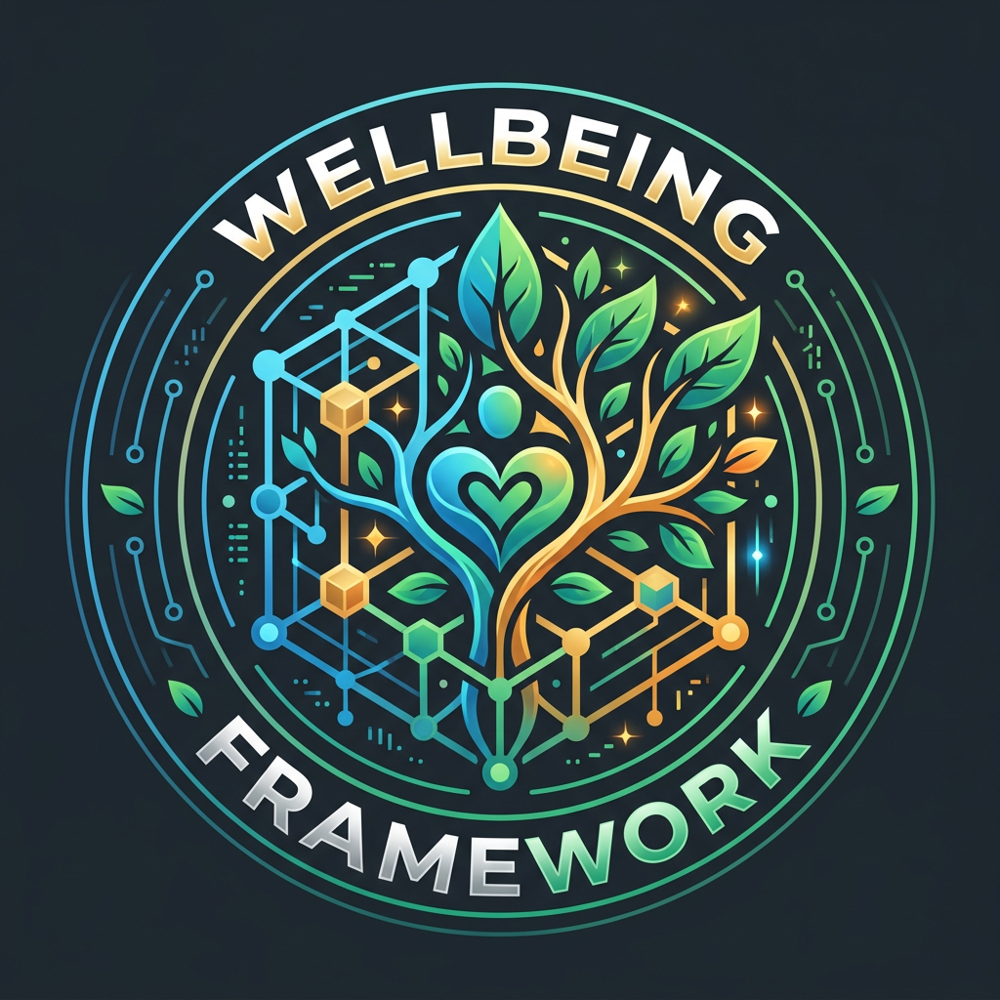
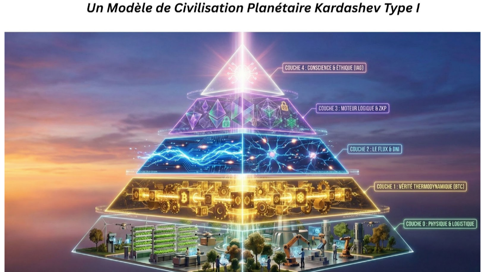
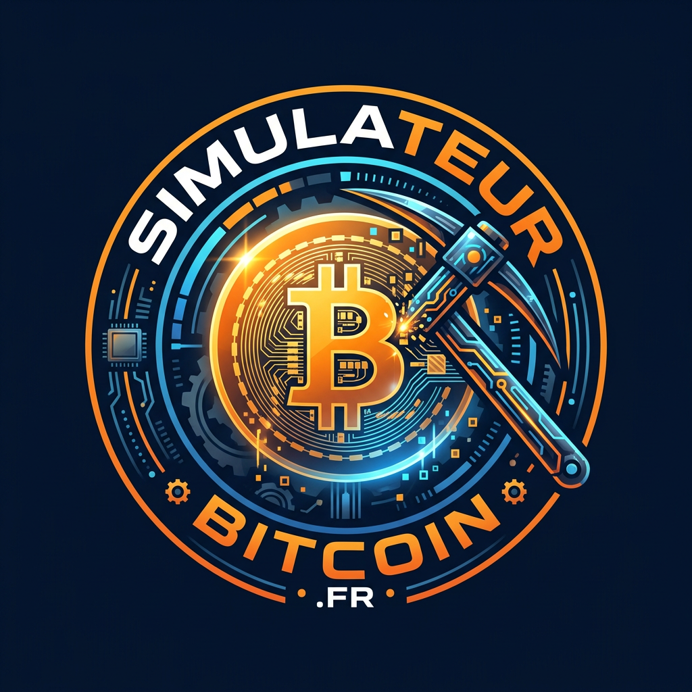

De l'Or Noir à l'Or Numérique From Black Gold to Digital Gold
La Géodésique du Grand Filtre : De l'Extraction Fossile au Calcul Thermodynamique Régénératif The Great Filter Geodesic: From Fossil Extraction to Regenerative Thermodynamic Compute
Pendant plus de deux siècles, le métabolisme industriel a reposé sur un acte thermodynamique irréversible : extraire de la lithosphère des hydrocarbures fossiles accumulés sur $300\text{ millions}$ d'années, les brûler dans des moteurs thermiques bridés par le rendement de Carnot, et rejeter plus de $60\,\%$ de l'énergie primaire en chaleur perdue et gaz à effet de serre. Ce règne de l'Or Noir — scellé en 1971–1974 par l'architecture du pétrodollar — indexait la monnaie sur notre vitesse de combustion d'un stock fini.
For over two centuries, industrial metabolism rested upon an irreversible thermodynamic act: extracting subsurface hydrocarbons accumulated over $300\text{ million}$ years, burning them inside Carnot-limited heat engines, and venting over $60\%$ of primary energy into the sky as unrecovered heat and greenhouse gases. That reign of Black Gold—cemented in 1971–1974 through the petrodollar architecture—indexed money to the speed at which humanity depleted a finite carbon stock.
À l'heure où l'érosion du taux de retour énergétique (EROI), le stress hydrique et l'inflation fiduciaire poussent les blocs géopolitiques vers la guerre d'usure, une bifurcation physique s'opère : le passage de la combustion entropique au calcul thermodynamique régénératif, couplant la Preuve de Travail (Or Numérique) et l'Intelligence Artificielle locale (Edge AI) aux cycles de l'eau et de l'humus.
As declining fossil EROI, hydrological stress, and fiat monetary debasement push geopolitical blocs toward attrition warfare, a concrete physical bifurcation emerges: transitioning from entropic combustion to regenerative thermodynamic compute, coupling Proof-of-Work (Digital Gold) and local Edge AI directly to water and soil cycles.
🔬 Protocole de Clarté Épistémique🔬 Epistemic Clarity Protocol
Conformément à l'ingénierie de L'Étalon Solaire, chaque mécanisme présenté distingue la physique démontrée, les pilotes industriels validés, la modélisation réseau et la prospective de Type I. Following Sun Standard engineering rigor, every mechanism distinguishes demonstrated physics, validated industrial pilots, grid-scale modeling, and Type I planetary foresight.
Conversion 100 % en chaleur100% Electro-Thermal Conversion
Toute puissance électrique dissipée dans une puce CMOS se transforme intégralement en enthalpie thermique ($Q_{\text{th}} = P_{\text{élec}}$), captée à $96\,\%$ par immersion liquide à $60\,^\circ\text{C}$.
Every electrical watt traversing CMOS logic converts 100% into thermal enthalpy ($Q_{\text{th}} = P_{\text{elec}}$), captured at $96\%$ efficiency via $60\,^\circ\text{C}$ liquid immersion.
Eau atmosphérique & MéthaneAtmospheric Water & Methane
Les réseaux métallo-organiques $\text{MOF-303}$ $[\text{Al(OH)(PZDC)}]$ captent $0,7\text{ à }1,3\text{ L}/\text{kg}/\text{cycle}$ dès $15\,\%$ d'humidité ; le minage sur torchère abat $>63\,\%$ des émissions $\text{CO}_2\text{e}$.
Crystalline $\text{MOF-303}$ $[\text{Al(OH)(PZDC)}]$ harvests $0.7\text{–}1.3\text{ L}/\text{kg}/\text{cycle}$ down to $15\%$ RH; flare-gas compute cuts methane $\text{CO}_2\text{e}$ emissions by $>63\%$.
Tirage convectif & Réponse < 50 msShaft Draft & Sub-50ms Response
Réhabilitation de mines désaffectées (Lemuria Technologies) : tirage thermique assisté ($\Delta p \approx 60\text{ Pa}$ à $50\text{ m}$ jusqu'à $\sim 550\text{ Pa}$ sur puits isolé de $400\text{ m}$) et effacement électrique en $<50\text{ ms}$.
Rehabilitating decommissioned mine shafts (Lemuria Technologies): buoyancy-assisted draft ($\Delta p \approx 60\text{ Pa}$ at $50\text{ m}$ up to $\sim 550\text{ Pa}$ in a $400\text{ m}$ insulated shaft) and sub-50ms grid response.
Démonétisation des guerresDemonetizing Attrition Wars
Ancrage thermodynamique empêchant le financement inflationniste occulte des conflits, enfouissement du silicium sous roche et déploiement d'arches interplanétaires.
Thermodynamic monetary anchoring ending covert inflationary war-financing, burying heavy compute underground, and extending closed-loop life support to Mars.
1. Invariance d'Échelle : Le Fractal Thermodynamique & L'Inversion de Jevons 1. Scale Invariance: The Thermodynamic Fractal & Inverting Jevons' Paradox
Contrairement aux turbines fossiles qui exigent des centrales géantes pour approcher $40\,\%$ de rendement mécanique, une puce silicium obéit à une invariance d'échelle stricte : de $50\text{ W}$ à $50\text{ GW}$, l'effet Joule convertit $100\,\%$ des électrons en chaleur après exécution du travail logique. Ce qui croît non-linéairement avec la taille $L$, c'est l'efficacité aéraulique (tirage gravitaire $\Delta p_{\text{tirage}}$ dans les puits verticaux) et le couplage multi-étagé.
Unlike fossil turbines requiring massive central plants to approach $40\%$ mechanical efficiency, silicon logic exhibits strict scale invariance: from $50\text{ W}$ to $50\text{ GW}$, Joule heating converts $100\%$ of electrical input into heat right after computation. What improves nonlinearly with scale $L$ is buoyancy airflow ($\Delta p_{\text{tirage}}$ in vertical shafts) and multi-stage thermal cascading.
En absorbant les surplus renouvelables écrêtés (prix négatifs) et le méthane fatal des torchères, cet acheteur de dernier ressort inverse le paradoxe de Jevons : chaque gain d'efficacité en $\text{J/TH}$ finance en amont de nouvelles capacités solaires et hydroélectriques tout en restituant la puissance au réseau civil en moins de $50\text{ millisecondes}$. Simultanément, l'étalon énergétique ($k_{\text{Nak}} \equiv h$) neutralise l'Effet Cantillon en rendant impossible l'impression monétaire sans dépense physique vérifiable.
By monetizing curtailed renewable surpluses (negative spot prices) and stranded flare methane, this location-agnostic buyer of last resort inverts Jevons' Paradox: every silicon efficiency gain ($\text{J/TH}$) underwrites new solar and hydro buildouts upfront while surrendering power back to citizens in under $50\text{ milliseconds}$. Simultaneously, thermodynamic proof ($k_{\text{Nak}} \equiv h$) neutralizes the Cantillon Effect by making unbacked money printing physically impossible.
| Axe SystémiqueSystemic Axis | Matrice de l'Or Noir (Pétrodollar 1971)Black Gold Matrix (1971 Petrodollar) | Matrice de l'Or Numérique (Étalon Solaire)Digital Gold Matrix (Sun Standard) |
|---|---|---|
| 1. Source | Stock fossile lithosphérique épuisable.Depletable subsurface fossil carbon stock. | Flux solaire ($173\,000\text{ TW}$), hydro, géothermie & torchères captées.Continuous solar flux ($173,000\text{ TW}$), hydro, geothermal & flare capture. |
| 2. Monnaie | Dette fiduciaire élastique & Effet Cantillon.Elastic fiat credit & Cantillon insider privilege. | Preuve de Travail ($k_{\text{Nak}} \equiv h$), plafond fixe $21\text{ M}$.Thermodynamic Proof of Work ($k_{\text{Nak}} \equiv h$), hard $21\text{ M}$ cap. |
| 3. Exergie | $\sim 36\,\%$ utile ; $\sim 64\,\%$ perdus en fumées et tours froides.$\sim 36\%$ work; $\sim 64\%$ vented via exhausts and cooling towers. | $100\,\%$ effet Joule capté par immersion à $60\,^\circ\text{C}$ ($\text{PUE} \approx 1,02$).$100\%$ Joule heat captured at $60\,^\circ\text{C}$ ($\text{PUE} \approx 1.02$). |
| 4. Émissions | $\text{CO}_2$, $\text{CH}_4$, $\text{NO}_x$, particules $\text{PM}_{2.5}$.$\text{CO}_2$, $\text{CH}_4$, $\text{NO}_x$, and $\text{PM}_{2.5}$ particulates. | Abattement $>63\,\%$ sur torchères + séquestration solide en Biochar.$>63\%$ flare methane cut + solid carbon locked in Biochar. |
| 5. Cycle Eau | Contamination de nappes (fracking) et évaporation thermique.Aquifer fracking contamination and evaporative tower losses. | Roues dessiccantes $\text{MOF-303}$ + distillation thermique MED fermée.Closed-loop $\text{MOF-303}$ air harvesting + MED thermal desalination. |
| 6. Pédologie | Engrais fossiles Haber-Bosch et minéralisation des sols.Fossil-gas Haber-Bosch fertilizers and topsoil depletion. | Séchage biomasse $65\,^\circ\text{C}$ $\to$ pyrolyse *Terra Preta* & aquaponie.$65\,^\circ\text{C}$ biomass drying $\to$ *Terra Preta* pyrolysis & aquaponics. |
| 7. Topologie | Détroits maritimes vulnérables (Ormuz, Malacca) & pipelines.Vulnerable maritime chokepoints (Hormuz, Malacca) & pipelines. | Maillage fractal sans goulet d'étranglement, transfert à vitesse $c$.Chokepoint-free fractal mesh, value settlement at light speed $c$. |
| 8. Réseau Élec. | Centrales rigides peinant à absorber l'intermittence VRE.Rigid baseload plants struggling with solar/wind intermittency. | Batterie virtuelle interruptible en $<50\text{ ms}$ (CLR).Sub-50ms interruptible virtual battery (*Controllable Load*). |
| 9. Matériaux | Cendres, boues toxiques et plastiques à usage unique.Toxic sludges, fly ash, and single-use petro-plastics. | Ouroboros biolixiviation douce : $99\,\%$ $\text{Cu, Au, Ag, Pd, Si}$ recyclés.Gentle bioleaching Ouroboros: $99\%$ $\text{Cu, Au, Ag, Pd, Si}$ recovery. |
| 10. Horizon | Actualisation court-termiste et guerres de capture énergétique.Short-term discounting and resource-capture wars. | Préférence temporelle basse, Halvings quadriennaux & Temps Profond.Low time preference, quadrennial Halvings & Deep Time stewardship. |
2. L'Ascension Pyramidale (L0 ──► L5) : Architecture & Nomenclature Matériaux 2. The Pyramidal Ascent (L0 ──► L5): Architecture & Material Bill of Quantities
🏛️ Cliquez sur un échelon pour ouvrir son bilan thermodynamique & matériel 🏛️ Click any tier to inspect its thermodynamic & material mass balance
▶ Échelon L0 : Porte CMOS & Puce Silicium 3 nm (10 W – 500 W)Tier L0: CMOS Gate & 3 nm Silicon Die (10 W – 500 W)10–500 W
À l'échelle atomique, l'effacement irréversible d'un bit impose le plancher de Landauer ($E_{\min} = k_B T \ln 2 \approx 2,9 \times 10^{-21}\text{ J}$ à $300\text{ K}$). Les processeurs ASIC gravés en $3\text{ nm}$ opèrent quelques ordres au-dessus pour garantir une commutation sans erreur à haute fréquence, convertissant chaque électron en preuve cryptographique puis en phonon thermique transféré au liquide diélectrique.
At the atomic scale, erasing one bit of information requires at least the Landauer bound ($E_{\min} = k_B T \ln 2 \approx 2.9 \times 10^{-21}\text{ J}$ at $300\text{ K}$). $3\text{ nm}$ ASICs operate orders above thermal noise for gigahertz reliability, converting every electron first into cryptographic truth and immediately into thermal phonons absorbed by dielectric fluid.
▶ Échelon L1 : Nano-Bitplant Domestique & Dôme Hydroponique (1,5 – 5 kW)Tier L1: Domestic Nano-Bitplant & Hydroponic Dome (1.5 – 5 kW)1,5–5 kW
Un caisson étanche en verre borosilicaté et acier inoxydable 316L (IP68, $0\text{ dB}$) immerge 1 à 2 unités ASIC/Edge-AI ($3,5\text{ kW}$) et s'interface par échangeur à plaques brasées avec le ballon d'eau chaude sanitaire ($250\text{ L/j}$ à $58\,^\circ\text{C}$) et un dôme hydroponique familial de 72 plants. La chaudière s'autofinance tout en sécurisant le foyer.
A silent ($0\text{ dB}$) IP68 borosilicate-and-316L stainless tank immerses 1–2 ASIC/Edge-AI units ($3.5\text{ kW}$), coupled via a brazed-plate heat exchanger to a $250\text{ L/day}$ domestic hot-water cylinder ($58\,^\circ\text{C}$) and a 72-site home hydroponic dome—turning heating bills into sovereign savings.
▶ Échelon L2 : Ferme Symbiotique Agro-Écologique & Biochar (100 kW – 1 MW)Tier L2: Symbiotic Agro-Ecological Farm & Biochar (100 kW – 1 MW)0,1–1 MW
Couplé aux hangars photovoltaïques ruraux ($500\text{ kW}$ type), le conteneur d'immersion sèche à $65\,^\circ\text{C}$ les résidus ligneux avant pyrolyse en Biochar (*Terra Preta*), abaissant de $35\,\%$ la pénalité énergétique d'évaporation. L'eau résiduelle à $28\,^\circ\text{C}$ chauffe les bassins de tilapias et les tables maraîchères quatre-saisons.
Paired with rural solar barns ($500\text{ kW}$ typical), the immersion skid pre-dries woody agricultural residues at $65\,^\circ\text{C}$ prior to Biochar (*Terra Preta*) pyrolysis, cutting moisture evaporation energy losses by $35\%$, while $28\,^\circ\text{C}$ return loops warm tilapia tanks and four-season greenhouses.
▶ Échelon L3 : Infrastructure Brownfield & Torchères — Lemuria Tech (10 – 50 MW)Tier L3: Brownfield Mines & Flare Extinction — Lemuria Tech (10 – 50 MW)10–50 MW
Architecture phare de Lemuria Technologies : réhabiliter d'anciens puits miniers ($H = 300\text{–}600\text{ m}$) en cheminées convectives naturelles traversant des rotors de $\text{MOF-303}$ régénérés gratuitement par la chaleur ASIC à $65\,^\circ\text{C}$, condensant jusqu'à $85\,000\text{ L/jour}$ d'eau pure en zone aride. Sur les champs pétroliers isolés, des modules mobiles éteignent les torchères de méthane ($>63\,\%$ d'abattement $\text{CO}_2\text{e}$), tout en offrant au réseau national une réserve primaire interruptible en $<50\text{ ms}$.
Flagship Lemuria Technologies blueprint: repurposing decommissioned mine shafts ($H = 300\text{–}600\text{ m}$) into natural buoyancy chimneys driving $\text{MOF-303}$ desiccant wheels regenerated by $65\,^\circ\text{C}$ ASIC heat, harvesting up to $85,000\text{ L/day}$ of pure water in arid regions. On stranded oilfields, mobile skids extinguish open methane flares ($>63\%$ $\text{CO}_2\text{e}$ cut) while acting as sub-50ms grid stabilizers.
▶ Échelon L4 : Vaisseau Terre — Grille Planétaire Kardachev Type I (1 – 100+ GW)Tier L4: Spaceship Earth — Kardashev Type I Planetary Grid (1 – 100+ GW)1–100+ GW
À l'échelle planétaire, les datacenters thermodynamiques enfouis absorbent tous les surplus solaires désertiques, hydroélectriques fluviaux et géothermiques volcaniques, couplés à des usines de dessalement multi-effets basse température (LT-MED). La monnaie mondiale adossée au travail réel démonétise les bons du Trésor inflationnistes qui finançaient jadis les conflits mondiaux.
At planetary scale, subterranean thermodynamic clusters monetize remote desert solar, run-of-river hydro, and volcanic geothermal surpluses, driving Low-Temperature Multi-Effect Distillation (LT-MED) desalination coastlines while removing inflationary war-bond financing from global geopolitics.
▶ Échelon L5 : Arche Centrifuge Interplanétaire & Serres Martiennes (25 kW – 10 MW)Tier L5: Interplanetary Centrifugal Ark & Martian Greenhouses (25 kW – 10 MW)MARS 0,38 g
En croisière Terre–Mars (anneau centrifuge à $0,38\,g$) puis sous des tubes de lave martiens à $-63\,^\circ\text{C}$, la masse informatique cesse d'être un fret inerte : le fluide hydrocarboné hydrogéné forme un bouclier passif contre les rayons cosmiques (GCR/SPE), fond le pergélisol, chauffe l'aquaponie (*Wolffia*, tilapias, spiruline) et ancre une Spacechain locale asynchrone face à la latence relativiste de $3\text{ à }22\text{ minutes}$.
During Earth–Mars transit ($0.38\,g$ centrifugal ring) and inside $-63\,^\circ\text{C}$ Martian lava tubes, compute racks eliminate dead payload mass: hydrogen-rich dielectric fluid shields crew against cosmic rays (GCR/SPE), melts subsurface permafrost, warms *Wolffia*/tilapia aquaponics, and anchors an asynchronous local Spacechain across the $3\text{–}22\text{ minute}$ light-time gap.
3. Explorateur Dynamique des Ordres de Grandeur Matériaux & Régénératifs 3. Dynamic Explorer of Material & Regenerative Orders of Magnitude
Polygone de Performance Symbiotique vs FossileSymbiotic Performance Polygon vs Fossil Baseline
Empreinte Matérielle vs Flux Régénératif Annuel (Log₁₀)Material Mass vs Annual Regenerative Output (Log₁₀)
4. Bâtir les Cinq Ponts de la Symbiose Civilisationnelle 4. Building the Five Bridges of Civilizational Symbiosis
💰 1. Le Pont Financier1. The Financial Bridge
🌱 2. Le Pont Agricole & Hydrique2. The Agricultural & Water Bridge
⚙️ 3. Le Pont Technologique (Ouroboros)3. The Technological Bridge (Ouroboros)
🧠 4. Le Pont des Compétences4. The Skills & Craft Bridge
🛡️ 5. Le Pont Humain & Cognitif : Devenir l'Homo Biodiversitas5. The Human & Cognitive Bridge: Becoming Homo Biodiversitas
Opposer aux méga-clusters d'IA opaques et centralisés une Edge-AI ouverte et locale couplée au protocole de provenance cryptographique Trinité (SHA-256 + Nostr + OpenTimestamps). Enfouie sous le roc, la machine silencieuse libère la surface terrestre pour la restauration du vivant, la contemplation et le lien fraternel (*Fihavanana, Ubuntu, Wu Wei*). Countering opaque centralized mega-AI with open local Edge-AI anchored by Trinity cryptographic provenance (SHA-256 + Nostr + OpenTimestamps). Buried quietly beneath the bedrock, autonomous silicon frees Earth's sunlit surface for ecological restoration, craft, and human kinship (*Fihavanana, Ubuntu, Wu Wei*).
5. La Géodésique du Grand Filtre (2026–2044) : Parcours Tactique Interactif 5. The Great Filter Geodesic (2026–2044): Interactive Tactical Obstacle Course
Entre le gouffre supérieur du Mordor Technocratique (surveillance panoptique, CBDC programmables et Super-IA prédatrice non alignée) et le gouffre inférieur de l'Effondrement Entropique (pénuries fossiles, hyperinflation et guerres d'eau), la crête de moindre souffrance exige de verrouiller 21 clés symbiotiques sur 7 jalons décisifs. Cliquez sur les étapes ou directement sur les nœuds du radar, et activez/désactivez les clés pour tester la stabilité de la trajectoire humaine !
Between the upper chasm of Technocratic Mordor (panoptic surveillance, programmable CBDCs, and unaligned predatory Super-AI) and the lower chasm of Entropic Collapse (fossil scarcity, hyperinflation, and water wars), the minimum-suffering ridge requires locking 21 symbiotic keys across 7 milestones. Click stages or canvas nodes directly, and toggle keys on/off to test humanity's trajectory!
—
—
6. Cascade Exergétique Animée & Boucle Ouroboros à 99 % 6. Animated Exergetic Cascade & 99% Hydrometallurgical Ouroboros
En fin de vie (~5 à 7 ans), les cartes ASIC entrent dans un bain de biolixiviation microbienne (*Acidithiobacillus ferrooxidans*) maintenu à $35\,^\circ\text{C}$ par les cuves voisines, extrayant $\text{Cu, Au, Ag, Pd}$ à $99,1\,\%$ sans fonderie toxique. At end-of-life (~5–7 years), retired hashboards enter a $35\,^\circ\text{C}$ microbial bioleaching bath (*Acidithiobacillus ferrooxidans*) warmed by active tanks, recovering $99.1\%$ of $\text{Cu, Au, Ag, Pd}$ with zero toxic smelting.
🌳 Le Retour à Gondor : La Machine dans l'Ombre, le Vivant dans la Lumière 🌳 Returning to Gondor: Machines in the Shadow, Life in the Sunlit Courtyard
Franchir le Grand Filtre d'ici l'horizon 2044 ne consiste ni à renoncer au génie mathématique humain, ni à transformer la surface terrestre en une mégapole grise asservie aux algorithmes. C'est accomplir l'inversion architecturale : descendre les cuves de silicium, les pompes et le recyclage robotisé dans le silence des cavités minérales réhabilitées, afin que seule remonte vers le jour une eau pure, une terre noire fertile et une monnaie incorruptible. Crossing the Great Filter by the 2044 horizon requires neither renouncing human mathematical genius nor paving Earth into a grey algorithmic megastructure. It demands an architectural inversion: lowering silicon immersion tanks, pumps, and robotic recycling quietly into rehabilitated mineral caverns below, so that only pure water, dark fertile soil, and incorruptible money rise into the daylight.
L'Or Noir brûlait le passé pour financer les empires.
L'Or Numérique capte le Soleil pour régénérer l'eau et les sols,
Et rend la surface de la Terre à l'Arbre Blanc du Vivant.
Black Gold burned the ancient past to bankroll empires.
Digital Gold harvests the Sun to regenerate water and soil,
Returning Earth's sunlit surface to the White Tree of Life.
« La volonté est technologique, la bonté reste humaine, et les mathématiques ne font pas de politique. Always was, always will be. » "Willpower is technological, goodness remains human, and mathematics plays no politics. Always was, always will be."
Contribuer à la Géodésique 2026–2044 Contribute to the 2026–2044 Geodesic
Vos retours sur les ordres de grandeur matériaux L0–L5, l'extinction des torchères ou les 21 clés du Grand Filtre sont les bienvenus. Your feedback on the L0–L5 material balances, flare-gas mitigation, or the 21 Great Filter keys is welcome.
☀️ The Sun Standard
Portail théorique bilingue : temps thermique KMS, preuves formelles Lean 4 et éconophysique solaire post-PIB. Bilingual theoretical portal: KMS thermal time, Lean 4 formal proofs, and post-GDP solar econophysics.
🌱 Regenerative Compute
Ingénierie matérielle (Lemuria Tech) : du BitTerrarium™ de bureau (17 W) aux mines Brownfield mégawatt & MOF-303. Hardware execution (Lemuria Tech): from 17 W desktop BitTerrarium™ units to megawatt Brownfield mines & MOF-303.
👁️ Protocole Trinité
Comme dans Matrix, il faut toujours Trinity pour nous sauver de la folie des hallucinations synthétiques et nous ouvrir l'accès direct à la Source : intégrité prouvée par le triplet Qui · Quoi · Quand (Nostr + SHA-256 + OpenTimestamps). Just like in The Matrix, it takes Trinity to rescue us from the madness of synthetic hallucinations and guide us straight back to the Source: integrity anchored via the Who · What · When triplet (Nostr + SHA-256 + OpenTimestamps).

🕸️ Web of Life (Mega-POD)
Jumeau numérique planétaire open-source en TypeScript sur grille hexagonale H3 couplant PoW, PoEW et cogénération MARL. Open-source planetary TypeScript digital twin on Uber H3 hexagonal grid coupling PoW, PoEW, and MARL cogeneration.

🌿 Wellbeing Framework (WU)
Comptabilité biophysique open-source en Unités de Bien-Être (WU/kWh) pour transcender les limites destructrices du PIB. Open-source biophysical accounting in Wellbeing Units (WU/kWh) designed to transcend destructive GDP metrics.
⚙️ Protocole de Suffisance
Limites planétaires, budgets exergétiques et gouvernance écologique open-source auditables par Preuve de Travail. Open-source planetary boundaries, exergy budgets, and ecological governance auditable via Proof-of-Work.
🪪 Kaya Wellbeing Identity
Identité souveraine open-source (Solid PODs & Preuve d'Humanité) reliant la couverture de Markov de l'individu à son empreinte biophysique. Open-source sovereign identity (Solid PODs & Proof-of-Personhood) linking an individual's Markov blanket to their biophysical footprint.

📚 Homo Biodiversitas & Horizon Zéro
Mes deux livres gratuits en accès libre : la symbiose entre la Noosphère et le vivant (Homo Biodiversitas) et l'ingénierie régénérative (Horizon Zéro). My two free open-access books: symbiosis between the Noosphere and living ecosystems (Homo Biodiversitas) and regenerative engineering (Horizon Zero).
🇲🇬 Angovo · ONG Madagascar
Projet d'ONG dédié à Madagascar pour développer l'accès souverain à l'énergie décarbonée et l'éducation à l'Intelligence Artificielle au service des communautés locales. NGO initiative dedicated to Madagascar to develop sovereign clean energy access and local Artificial Intelligence education empowering Malagasy communities.
📘 Le Livre Bitcoin
Ouvrage de référence accessible sur la souveraineté monétaire, la thermodynamique de la rareté et l'histoire de Bitcoin (édition publiée, dépôt privé). Comprehensive French reference book on monetary sovereignty, thermodynamics of scarcity, and Bitcoin's foundations (published edition, private repo).

⛏️ Simulateur Bitcoin
Simulateur open-source de minage Bitcoin : modélisation du hashrate, de la consommation électrique, de la difficulté réseau et de la rentabilité des ASICs. Open-source Bitcoin mining simulator: modeling hashrate, power consumption, network difficulty adjustments, and ASIC profitability.
Observatoire open-source en temps réel de la trajectoire du réseau Bitcoin, des cycles de Halving et des projections de rendement possible. Open-source real-time observatory tracking Bitcoin's network trajectory, Halving cycles, and potential yield projections.